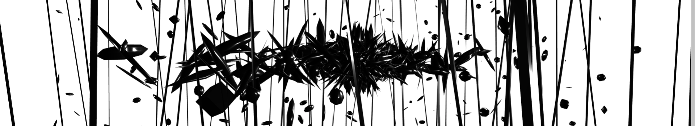

Resumen
El confinamiento provocado por la pandemia de COVID-19 obligó a artistas, gestores, instituciones públicas e industrias a replantear maneras de compartir flujos co-presenciales y hacer performance audiovisual en vivo.
El presente artículo describe Panorama, un conjunto de módulos de código y software que permiten realizar conciertos en espacios virtuales tridimensionales alojados en la web. De manera complementaria, enuncia discusiones que surgieron durante la activación del espacio sobre materialidad, virtualidad, descentralización, distribución, espacio público, arqueologías del cyberespacio, entre otros.
Palabras clave— streaming, multiplayer, 3d, audio, video, materialidad, virtualidad, cyborg, cyberespacio, p2p
Panorama (rexmalebka, 2020) fue un programa escrito por PiranhaLab1, implementado en el marco de eventos institucionales, independientes y comisiones específicas. La hipótesis/premisa central de este proyecto buscó que los usuarios pudieran compartir una experiencia ligera para el navegador de manera co-presencial, aprovechando las posibilidades de las tecnologías de transmisión de audio y video. Hemos decidido delimitar el desarrollo de Panorama en torno a estos eventos y en particular, a EDGES2. Los eventos realizados en el marco de este ciclo se llevaron a cabo del 6 de agosto al 19 de noviembre de 2020. Algunos eventos independientes sucedieron ligeramente antes o después de estas fechas.
Este proyecto de investigación considera una selección de eventos como casos de estudio para la comprobación de la hipótesis/premisa principal del software desarrollado: Notas de Ausencia3 de Marianne Teixido, La Contemplación del Fin del Mundo4 de Dorian Sotomayor y threecln5 de Emilio Ocelotl. Complementamos la descripción con algunos espacios y eventos adicionalmente seleccionados: Pruebas Proféticas, Distopia, Underborders y 4NT1.
El artículo aporta elementos a una discusión para la reflexión transversal (técnica, estética y de investigación académica) y utiliza conceptos que nos permiten desplazarnos entre estos hilos para entretejer la investigación transdisciplinaria. Se adscribe a los planteamientos de los estudios del software y busca extender la discusión del terreno técnico y descriptivo. A lo largo del texto buscamos problematizar el papel que juega la computadora (local o en servidores) en la realización de actividades musicales y peformáticas.
La primera parte de este apartado describe una serie de plataformas, paralelas aPanorama, que permitieron realizar conciertos audiovisuales en el navegador con entornos tridimensionales. Los puntos de coincidencia entre espacios que la investigación detectó fueron: audio y video transmitido en tiempo real y la posibilidad de posicionar pantallas, audio, avatares y escenarios en el espacio. La alusión a las plataformas que compartieron ecosistema con Panorama se delimita proyectos con cercanía performática, la mayoría de ellos escritos e implementados en la Ciudad de México.
En el contexto de la programación al vuelo o live coding, los Algoraves organizados por Algo:ritmi6 iniciaron el interés por los espacios tridimensionales de realidad virtual para lidiar con el distanciamiento social de la pandemia. Estos eventos tuvieron lugar en Mozilla Hubs7. Esta plataforma resuelve el backend de la experiencia y permite al diseñador de espacio centrarse en el frontend, el montaje del escenario al que acceden los usuarios.
Para el caso de la comunidad creativa en México, algunos otros casos de implementación de espacios virtuales en situaciones de concierto fueron propuestas por TOPLAP México. De manera similar a Algo:ritmi, Algoraves eventos relacionados con la escena de la programación al vuelo8 fueron organizados en FabricaVR, la plataforma de realidad virtual dedicada de TOPLAP México. Ambos casos forman parte de comunidades que antes de la pandemia, realizaban conciertos con tecnologías de transmisión de audio y video9.
Adicionalmente, otras plataformas plantearon eventos similares con módulos de software distintos. Tal fue el caso de la plataforma OXXXO de Carlos Pesina que en co-participación con el festival Ceremonia permitió la realización de eventos digitales para afrontar la cancelación de conciertos presenciales.10
A-frame11 fue una solución alternativa a Mozilla Hubs para la realización de eventos virtuales. Sinestesia12 y ZeYX Lab13 implementaron este entorno. Three.js14 fue otro framework elegido para realizar este tipo de experiencias para el navegador. En este sentido destacamos el caso de Calindros15 de Hugo Solís. Este marco de trabajo resuelve el render gráfico, el resto de los complementos (comunicación entre pares, transmisión y procesamiento de señales de audio y video) debe ser resuelto de manera independiente.
Finalmente, federacion-de-codigo-al-vuelo (federaciondecodigoalvuelo, 2020) fue el parteaguas de algunas ideas centrales que desembocaron en Panorama pero también en otros dos proyectos: Zona hipermedial y Camposónico16 (diegodvc, 2020). La experiencia de colaboración con la federación permitió concebir el entramado de módulos de código que pudieran resolver aspectos específicos. Tal es el caso de un chat o alguna forma de escritura en tiempo real o la transmisión de gestos de un avatar que extiendieran las posibilidades de desplazamiento y movimiento corporal en el espacio. La búsqueda por un espacio personalizado de los proyectos que se desprendieron de la federación se estableció con el objetivo de resolver problemáticas de rendimiento que las plataformas de alto nivel resolvían de una manera poco transparente.
Los eventos anteriormente enunciados resolvieron la transmisión de audio y video con plataformas privativas de streaming como YouTube y Twitch; plataformas para envío bidireccional de señales de audio como Sagora, jacktrip y Sonobus y plataformas para el montaje de servidores de audio y video como Icecast o LiquidSoap. Esta última experiencia apuntó a la escritura de un servidor personalizado de streaming de audio y video.
De la experiencia como asistentes, como ejecutantes y como incipientes investigadores/escritores de código en plataformas y eventos que implicaron estas resoluciones fue que el proyecto de PiranhaLab empezó a delimitarse. Adicionalmente, sugieron discusiones sobre estos entornos, de las piezas y eventos que contuvieron e incluso del momento en el que espacio y e interpretación se desdibujan.
El diseño de Panorama consideró:
Panorama se escribió para entornos web, no requiere instalación de software adicional, más allá de un navegador web actual. Los avances en la tecnología web permiten la homogeneización de la experiencia y pueden abarcar un gran público. El sistema utiliza WebGL17 para la renderización de imagen en el navegador. Este entorno permite la generación de espacios virtuales y tridimensionales donde se pueden alojar experiencias visuales, auditivas y presenciales. Javascript es el lenguaje de programación principal del proyecto debido a su uso normalizado en navegadores y aplicaciones web. Para fines prácticos, este sistema permite conectar las partes del sistema entero.
Three.js como framework implementa webGL y asegura la rápida codificación y reutilización de código. Además, es posible importar modelos hechos en programas de modelado tridimensional, efectos y módulos para la reproducción de audio en web con Web Audio API18 y conceptos convencionales y compartidos de materiales y geometrías relacionados a programas de modelado en tes dimensiones. Como un punto adicional, este marco de trabajo cuenta con documentación actualizada y constante. La implementación de WebAssembly19 ha permitido la generación de sistemas rápidos y eficientes, sin capas de abstracción de software innecesarias.
El diseño del módulo de streaming presentó una discusión sobre lo legal, la reproducción de audio y video en la web y uso de recursos. Las restricciones que imponen los servidores privados al contenido remixeado fue una de las motivaciones para implementar un sistema personalizado. De esta manera, el sistema evita el mercado exclusivo de servicios de streaming privados, con licencias de paga o limitados. De manera complementaria, el sistema de streaming personalizado permite controlar la cantidad de recursos usados y usuarios conectados. Los formatos para la transmisión de video en web explorados fueron: RTMP (Real Time Messaging Protocol), FLV (Flash Video), HLS (HTTP Live Streaming), video a través de WebSockets20, WebRTC (Web Real-Time Communication) y MPEG-DASH (Dynamic Adaptive Streaming over HTTP).
Las características actuales presentes en HTML5 (Quinta versión de HyperText Markup Language) permiten utilizar formatos de streaming no nativos con frameworks de decodificación para el despliegue de video en formatos soportados por el navegador. Panorama utiliza RTMP debido a 1) la robustez del protocolo, 2) la rapidez de transmisión de datos, 3) la documentación que existe sobre NGINX21 RTMP y 4) el uso de FFmpeg22 para la recodificación y redimensión de video en la web. La plataforma utiliza FLV debido a la velocidad del protocolo (no se descarta el uso de otros protocolos en el futuro). Para el uso de FLV en el navegador, se utilizó FLV.js.
Para la interacción entre usuarios se utilizó WebSockets. Esto implicó: 1) uso de chat, 2) compartición en tiempo real de eventos gestuales (rotación y posición) del avatar utilizado y 3) personalización de modelo, textura y nombre de cada usuario.
Del lado del servidor se usaron balanceadores de carga junto con modelos de configuración para la instalación y eliminación de recursos, haciendo independientes los servidores dedicados al streaming y a servicios web. Esto permite que los espacios puedan ser escritos, eliminados o mantenidos según el diseño del evento en cuestión.
Notas de Ausencia (MarianneTeixido, 2020) es un ensayo generativo en la web. Utiliza el texto dato que por medio de la computadora como agente resignificante, deconstruye estructuras discursivas para resemantizar la narrativa sobre las desapariciones de mujeres en México y América Latina.
El tiempo y espacio virtual conforman una partitura para la memoria y la denuncia. La narrativa, semi autónoma, argumenta a partir de textos tomados de tweets, poemarios, libros y artículos feministas que explican desde la teoría las desapariciones forzadas, el feminicidio y la violencia de género. Lo cuales están presente como texto, imagen y sonido.
La narrativa de la pieza está articulada mediante la intervención de dos bots. El primero comparte tuits que localiza con hashtag como: #MéxicoFeminicida, #MadresEnBúsqueda, #ViolenciadeGenero, #NiUnaMenos, entre otros.23 Así como con un bot de generación de texto automático.
Esta exploración permitió a Marianne Teixido en colaboración con PiranhaLab encontrar en Three.js la solución para implementar espacios tridimensionales como la parte visible de piezas y espacios.
Pruebas Proféticas fue el evento piloto que implementó por primera vez dos tipos de tecnologías específicas: exploración multijugador y streaming personalizado.
Este espacio de prueba consistió en un incipiente modo de exploración co-presencial que guardaba una relación entre la posición y la rotación de la cámara, controlada por medio del ratón y el teclado de la computadora. Para el control se utlizaron las teclas WASD y flechas siguiendo la convención de la cámara de videojuegos en primera persona. La información de posición y rotación fueron compartidas y podían visualizar el movimiento de avatares que representaban a los asistentes en el espacio digital.
La transmisión de audio y video fue un aspecto que el planteamiento de PiranhaLab buscó solucionar. Es posible utilizar servicios gratuitos o de paga para la transmisión de datos audiovisuales, sin embargo, en menor o mayor medida, el flujo audiovisual generado es analizado y en caso de que se detecte algún extacto de audio proveniente con derechos de autor, el stream es silenciado. Este artículo no busca centrarse en discusiones sobre derechos de autor sino en la usabilidad de un streaming audiovisual.
La concatenación de software estuvo delimitado por la experiencia de usuarios hipotéticos. Esto nos llevo a plantear los posibles agentes que se involucraban con la experiencia inmersiva. Como la propuesta partió de eventos performáticos tipo concierto, la figura de intérpretes/artistas fue central. El mantenimiento del flujo performático expresado a partir de una transmisión de audio y video delimitó el aspecto técnico y estético del espacio: El primer objetivo a resolver fue el streaming que pudiera ser estable, eficiente, compatible con la convención de transmisión personalizada ejecutada con programas de interfaz gráfica como OBS (Open Broadcaster Software).
El segundo tipo de agente fue el público que navegaba en el espacio y que realizaba gestos corporales virtuales sencillos: posición y rotación.
Un tercer tipo de agente se involucró con los aspectos fuera del escenario, la lógistica de la transmisión y el mantenimiento del sistema en tiempo real visibilizó la figura del staff. En este sentido la labor tecnológica virtual del equipo de PiranhaLab fue cercana a la logística y a la división del trabajo de un escenario para conciertos presenciales.
La experiencia con Pruebas Proféticas abrió camino para el diseño de la edición 2020 de EDGES. El concepto curatorial de EDGES estuvo definido por Marianne Teixido y guardó una estrecha relación con los planteamientos de Notas de Ausencia, considera las posibilidades de creación planteandonos desde el feminismo intereseccional, perspectiva desde la cual se problematiza el uso de la tecnología teniendo en consideración las condiciones de raza, género y clase, a partir de la cuales se establece una crítica las herramientas hegemónicas ya dadas para apuntar a la creación de estas otras herramientas, construídas desde dinámicas de organización colectiva y conocimientos situados. EDGES 2020 como propuesta curatorial contempla la participación en su mayoría de mujeres y persona no binaries. Las obras dialogan con las hibridaciones e-corporales en espacios virtuales ficcionados desde las subjetividades feministas y transfeministas que toman internet como territorio y espacio de intercambio cultural.
Distopía, NLXS + NK, Interconexión, setInterval() y La Contemplación del Fin del Mundo fueron los eventos realiados en el marco de EDGES.
La Contemplación del Fin del Mundo es un performance a modo de ejuego, último evento de la serie EDGES que destruye el escenario de manera simbólica para dar por finalizado el ciclo de conciertos. Los asistentes podían presenciar el fin del mundo con la destrucción del escenario y otros eventos como inundaciones, objetos celestiales y finalmente la dispersión de los colores del escenario, dejando a los objetos del espacio sin razgos reconocibles.
La idea principal sirvió como vehículo para la exploración del espacio como característica del performance, el mundo explorable, la persecución en forma de figuras celestiales que ocupaban todo el espacio o que se expandían e iluminaban todo así como las inundaciociones. También permitió la exploración del uso de pantallas distribuidas a lo largo de todo el mundo, permitiendo a los usuarios presenciar el performance desde cualquier ubicación.
Uno de los aspectos a destacar de este concierto es el uso de acciones colectivas lanzadas por el artista, que durante el trascurso del evento podía cambiar las características del ambiente de manera similar entre los participantes. La experiencia de los usuarios fue se transformaba en el trancurso del evento, fue homogénea y compartida. Adicionalmente se implementó Hydra (ojack, 2020) como un framework externo para la creación de visuales.
Las dificultad de las experiencias compartidas radica en la sincronización de eventos, tanto para los usuarios que ingresan desde el inicio o los usuarios ocasionales, sin importar ubicación geográfica o dispositivo. Esta posibilidad permite la interacción del artista y genera situaciones que añadan dinámica al juego, donde los asistentes se desplazan de ser observadores a ser participantes activos.
THREE.studies (EmilioOcelotl, 2020b) hereda discusiones referentes al punto de vista, la co-presencia, el envío de información gestual a través de la web, la transmisión de flujos de audio y video a partir de servidores y el uso de fuentes sonoras en un espacio virtual. Se relaciona con 4NT1 (EmilioOcelotl, 2020a) y tres-estudios-abiertos (EmilioOcelotl, 2020c) y forma parte de un proyecto de investigación doctoral que aborda nuevas prácticas artísticas audiovisuales en el navegador a partir de lenguajes de programación.

La primera instancia de THREE.studies, threecln, es un performance audiovisual para el navegador. Las señales de audio y video se encuentran en un espacio diseñado para el evento. Los elementos del escenario interactúan con las señales y proveen de retroalimentación sonora y visual al intérprete musical.
El espacio se fusiona con la interpretación y resulta en una pieza para el navegador / partitura gráfica que se transforma a sí misma cada vez que se interpreta. La obra involucra a un intérprete musical, para el caso que revisamos en este artículo, de violonchelo eléctrico, el operador de la electrónica en vivo y el equipo que mantiene la estabilidad del espacio.
El intérprete musical envía un stream que es espacializado y que interactúa con los elementos visuales de la escena. El resultado es una obra / partitura que puede explorarse en tiempo real por el público.
Por otro lado, 4NT1 busca problematizar las relaciones que existen entre usuarios y plataformas tecnológicas; es un paso hacia la realización de usuarixs que desdibujan las fronteras de la pasividad política y económica teniendo como epicentro lo sensible. El proyecto parte de la composición visual conducida por datos. Aprovecha la investigación y el desarrollo de tres estudios abiertos, un proyecto doctoral sobre nuevas prácticas artísticas en el navegador y librerías de síntesis granular para audio y video.
La obra toma en cuenta la transformación de flujos de audio y video y se retroalimenta con la acción de agentes externos. Con técnicas de aprendizaje automático, detecta gestos faciales que son intepretados como un flujo de datos. El proyecto problematiza este flujo con el uso de tecnologías que implican una responsabilidad de los datos de usuarixs. De esta manera el proyecto pplantea una discusión que parte de la instagramización de la política y la estetización de la resistencia para desembocar en la política de la representación.
4NT1 es un pedazo de software que puede utilizarse en la vida cotidiana y que desplaza la ofuscación en el uso de tecnologías que funcionan como cajas negras al desarrollo de capas estéticas para la evasión. El proyecto contempla la comparación de dos caminos que permitan plantear una crítica al software como caja negra. Es un primer estudio de reflexión tecno-social. Retoma la idea de modularidad y se adscribe a los estudios del software, esto quiere decir que la obra se complementa con la programación, lectura, escritura y pensamiento con software.
Propuesta para esta sección: Desmantelar e integrar en resultados, descripción y conclusiones
La investigación detectó funcionalidad y experimentación como dos posibilidades de un continuo para la escritura de software en un marco artístico y performático. EDGES como plataforma explicita el papel experimental de los actos, la plataforma tecnológica también podría ser experimental e incluso podría desdibujarse en pos de la integración performance-espacio bajo la misma premisa de la experimentación.
Los eventos realizados en esta diversidad de plataformas han utilizado ligas a internet que de acuerdo a la fecha consultada, redireccionan a distintos espacios virtuales. A diferencia de los sitios que utilizan texto y entornos de programación web como HTML, la mezcla de módulos y el uso de frameworks dedicados que utilizan renderizadores 3d como webGL, motores de audio como Web Audio API o plataformas de transmisión de audio y video personalizadas y efímeras dificultan la documentación convencional. La labor se complica cuando el mantenimiento de estos espacios sobrepasa los alcances temporales o económicos del proyecto. El reto metodológico que esto supone es un asunto pendiente para las investigaciones que hacen referencia a tecnología. En este sentido, la referencia a repositorios de código públicos podrían arrojar soluciones para la documentación y arqueología de los desarrollos tecnológicos. Una alternativa para la documentación de estos procesos es Wayback Machine24.
Una de las reflexiones que estuvo presente desde el inicio del proyecto partió de las distinciones más inmediatas: mundos virtuales / mundos reales, materialidad / inmaterialidad. Consideramos que procesos como los de Panorama transitan entre la extensión de la fisicalidad hacia la virtualidad25 (Frazer, 2013) y la reconfiguración de la materialidad26 (Sosa, 2017) de cara al giro digital que posibilita la continuación y contraposición estéticas y formas de organización social.
Señalamos la naturaleza efímera de obras y espacios en la lógica digital, y consideramos que el reto técnico, investigativo y de (re)activación está abierto y en constante discusión. En este sentido, la formación de artistas capaces de interactuar y ejecutar estas piezas podría apuntar a la consideración de estos aspectos en los programas de interpretación musical con nuevas tecnologías. Adicionalmente el aspecto formativo podría extenderse hacia la investigación y escritura de software.
La presente investigación estuvo relacionada con la gamificación emergente27 tácita en la escritura de proyectos como Panorama. Esto implica 1) tecnología, por ejemplo pantallas, combinaciones de teclas para la exploración de espacios pero también dispositivos de realidad virtual, 2) diseño visual y sonoro de los espacios, objetos digitales en espacios tridimensionales, audio inmersivo, 3) intercambio de información para la co-presencia en tiempo real dentro de espacios digitales o el multijugador e incluso 4) narrativas e imaginarios convenidos, explorados desde el diseño de la experiencia y esperados del lado del público.
El término cyberespacio28 puede ser un punto de partida para describir la actividad relacionada con Panorama. Puede ser contrapuesto con diversos conceptos que coinciden en la práctica, en la arquitectura de intercambio de información, en la denominación conceptual y en la convergencia de tecnologías expresamente mercantilizadas para la distribución de experiencias de Realidad Virtual (VR) como Oculus Rift. VR también puede ser un concepto inicial, socialmente convenido para describir la experiencia de Panorama pero para evitar contradicciones en la conducción de una experiencia en el cyberespacio hacia exploraciones hacia dispositivos/interfaces para la interacción en estos espacios, el presente artículo decide retomar la noción de inmersividad. Consideramos que la relación entre cyberespacio como una noción narrativa y de inmersividad como una forma de resolución técnica de exploración de una cámara en un espacio tridimensional, con audio posicionado29, puede arrojar algunas ideas sobre la actividad realizada en el marco de Panorama.
Manifiestos, posturas políticas y alternativas en la organización que dialogan con la escritura de software como desarrollo tecnológico y como acto creativo. Por ejemplo live coding y la transparencia de los procesos o el uso de interfaces de texto (Collins et al., 2003), el manifiesto de una servidora feminista (Feminist-Server-Summit, 2014) o la arquitectura de distribución de información par a par30 que persigue la distribución y la descentralización en redes que posibilitan espacios virtuales (Frazer, 2013) y que incluso puede extenderse al autocuidado y formas alternativas de expresar relaciones sociales en red (Choi, 2018).
Estas perspectivas pueden extenderse hacia una postura para la investigación de tecnología y el papel que juegan en la política de los espacios físicos y virtuales, como el cuarto propio (Zafra, 2020) o el buen conocer (cita platohedro). Podríamos relacionar estos procesos con el giro de los nuevos medios descrito por Manovich (2001), las implicaciones sociales de este giro y sobre todo, las consecuencias estéticas que a partir de este se abren y desenvuelven en el performance musical por medio de la computadora y otras prácticas afines.
De este mapa ¿Podríamos establecer un corpus de conceptos y estéticas (Shanken, 2010) que pudieran explicar las nuevas prácticas artísticas con medios que implican a la música pero también a otros campos, que además pudiera considerar aspectos sociales y políticos implicados en la música y expresiones cercanas a ésta? ¿Cómo se vincularía este giro con las implicaciones políticas y estéticas de la programación de software y su ejecución (Cox y McLean, 2012) de cara a expresiones más claramente delimitadas hacia la música y la tecnología que la posibilita?
Los usuarios pudieron compartir una experiencia ligera para el navegador de manera co-presencial, aprovechando las posibilidades de las tecnologías de transmisión de audio y video. Destacamos la importancia de plantear soluciones compartibles en lo que respecta a la transmisión de audio-imagen. La escritura de esta parte de Panorama fue utilizado en el marco de otros eventos y ciclos.
El proyecto no tuvo un plan de acción específico para la realización de mediciones durante los conciertos, a pesar de que el control del servidor lo permitió. Sin embargo, la lectura de información a partir de una simulación del evento arroja datos importantes en este sentido.
Sobre las impresiones del público, fue posible realizar un cuestionario durante Pruebas Proféticas.
La importancia de una infraestructura tecnológica y social. Esto se puede entretejer a partir de decisiones curatoriales que vinculan potencial tecnológico con alianzas entre actores.
Del lado teórico es necesario convenir y reforzar un corpus de conceptos para la investigación sobre Tecnología Musical. Detección de campos y persectivas de investigación: las agencias que están presentes en eventos que se desenvuelven con tecnología.
Destacamos el giro de los nuevos medios como un cambio de paradigma que la tecnología musical debe considerar por las implicaciones de los usos/críticas de las tecnologías de la información, las tendencias para la resolución de problemas relacionados con gestión de datos y las consecuencias estéticas que a veces se empalman y otras rebasan a la música y las perspectivas de investigación asociadas a esta disciplina.
El rodeo o la realización de un motivo tecnológico como una perspectiva de investigación que pueda aportar en el aspecto tecnológico y teórico-metodológico, sobre todo en campos que lo permiten como humanidades, artes y específicamente, investigación que implica musica y expresiones audiovisuales con tecnología.
1“PiranhaLab es un laboratorio interdisciplinario que trabaja en las tripas del software”. https://piranhalab.github.io/ (Consultado el 15 de abril de 2021)
2“Plataforma de experimentación y difusión de proyectos audiovisuales en vivo” impulsada por el Laboratorio de Imágenes en Movimiento del Centro Multimedia del Centro Nacional de las Artes. https://www.facebook.com/events/209679013466792 (Consultado el 15 de abril de 2021)
3https://notasdeausencia.cc (Consultado el 15 de abril de 2021)
4https://edges.piranhalab.cc (Consultado el 15 de abril de 2021)
5https://threecln.piranhalab.cc(Consultado el 15 de abril de 2021)
6https://www.facebook.com/AlgoritmiTorino/about/ (Consultado el 15 de abril de 2021)
7https://hubs.mozilla.com/ (Consultado el 15 de abril de 2021)
8https://networkmusicfestival.org/programme/performances/toplap-mexico-vr-algorave/ (Consultado el 15 de abril de 2021)
9https://www.youtube.com/c/Eulerroom/videos(Consultado el 15 de abril de 2021)
10La documentación es escasa. Ver: https://www.instagram.com/p/B_bdw_TlrKa (Consultado el 15 de abril de 2021) y https://medium.com/@desyfree/musicaenvivocovid19-79e570a8f321 (Consultado el 15 de abril de 2021)
11A-frame es “un marco de trabajo para construir experiencias de realidad virtual(VR)”. https://aframe.io/docs/1.2.0/introduction/ (Consultado el 15 de abril de 2021)
12“Laboratorio de Experimentación, Improvisación y Nuevos Medios”. https://www.instagram.com/si.nestes.ia/(Consultado el 15 de abril de 2021)
13https://zeyxlab.com/(Consultado el 15 de abril de 2021)
14“El proyecto de three.js apunta a la creación de una librería 3D fácil de usar, ligera, multinavegador, multipropósito”. https://threejs.org/ (Consultado el 15 de abril de 2021)
15https://calindros.site/ (Consultado el 15 de abril de 2021)
16https://echoic.space/ (Consultado el 15 de abril de 2021)
17https://www.khronos.org/webgl/(Consultado el 15 de abril de 2021)
18“La API de Audio Web provee un sistema poderoso y versatil para controlar audio en la Web, permitiendo a los desarrolladores escoger fuentes de audio, agregar efectos al audio, crear visualizaciones de audios, aplicar efectos espaciales (como paneo) y mucho más.” https://developer.mozilla.org/es/docs/Web/API/Web_Audio_API (Consultado el 15 de abril de 2021)
19“WebAssembly es un nuevo tipo de código que puede ser ejecutado en navegadores modernos — es un lenguaje de bajo nivel, similar al lenguaje ensamblador, con un formato binario compacto”. https://developer.mozilla.org/es/docs/WebAssembly (Consultado el 15 de abril de 2021)
20“WebSockets es una tecnología avanzada que hace posible abrir una sesión de comunicación interactiva entre el navegador del usuario y un servidor.” https://developer.mozilla.org/es/docs/Web/API/WebSockets_API(Consultado el 15 de abril de 2021)
21“Nginx es un servidor web/proxy inverso ligero de alto rendimiento”. https://es.wikipedia.org/wiki/Nginx(Consultado el 15 de abril de 2021)
22“FFmpeg es el marco de trabajo multimedia líder capaz de decodificar, codificar, transcodificar, mux, demux, transmitir, filtrar y reproducir casi cualquier cosa que los humanos o las máquinas hayan creado”. https://www.ffmpeg.org/about.html(Consultado el 15 de abril de 2021)
23https://twitter.com/notasausencia (Consultado el 15 de abril de 2021)
24“The Wayback Machine es una iniciative de Internet Archive para construir una librería digital de sitios de Internet y otros artefactos culturales en formato digital”. http://web.archive.org/ (Consultado el 15 de abril de 2021)
25‘la trascendencia de la fisicalidad del mundo virtual nos permite extender nuestro modo de operación en el mundo físico. Nuevas formas de viaje, una nueva forma de comunicación, una nueva forma de operación, un nuevo medio de expresión”pp. 49
26“el arte no solamente podría ser performeado en el plano sensorial, sino también en el plano inteligible. Las estéticas de la participación y la constitución de los medios digitales podrían intepretarse como la continuación de algunos de esos prinicipios.”pp 190
27O Ludificación, del inglés gamification. Para Hamari (2019) existe la gamificación intencional y emergente. El presente artículo hace referencia a la segunda: “la gamificación se puede definir como un proceso cultural gradual y emergente, aunque no intencional, derivada del compromiso cada vez más generalizado con los juegos e interacciones lúdicas.”
28“El término cyberespacio puede ser usado vagamente para describir la interconexión espacial e invisible de computadoras en el Internet y es aplicado a casi cualquier experiencia espacial y virtual creada en una computadora” (Frazer, 2013)
29“En Web Audio, espacializaciones complejas en 3D son creadas utilizando PannerNode, que en términos legos básicamente son muchas matemáticas cool para hacer que el audio aparezca en un espacio 3D. Piensa en el audio volando sobre de ti, trepando atras de ti, moviéndose enfrente de ti”https://developer.mozilla.org/en-US/docs/Web/API/Web_Audio_API/Web_audio_spatialization_basics (Consultado el 15 de abril de 2021)
30P2P (par a par) por sus siglas en inglés. “La arquitectura de una red distribuida puede ser llamada Par a Par (P-to-P, P2P, ...) si los participantes comparten una parte de los recursos de su propio software (poder de procesamiento, capacidad de almacenamiento, capacidad de conexión a la red, impresoras,...) Estos recursos compartidos son necesarios para proveer el Servicio y el contenido ofrecido por la red... Estos son accedidos por otros pares directamente sin pasar por entidades intermediarias.”(Schollmeier, 2001)
Choi, T. (2018). Distributed web of care. http://distributedweb.care/.
Collins, N., McLean, A., Rohruber, J., y Ward, A. (2003). Live coding techniques for laptop performance. Organised Sound, 8(3).
Cox, G. y McLean, A. (2012). Speaking Code: Coding as Aesthetic and Political Expression. The MIT Press.
diegodvc (2020). Camposonico. https://github.com/diegovdc/camposonico.
EmilioOcelotl (2020a). anti. https://github.com/EmilioOcelotl/anti.
EmilioOcelotl (2020b). Three.studies. https://github.com/EmilioOcelotl/THREE.studies.
EmilioOcelotl (2020c). tres-estudios-abiertos. https://github.com/EmilioOcelotl/tres-estudios-abiertos.
federaciondecodigoalvuelo (2020). en-vivo. https://github.com/federacion-de-codigo-al-vuelo/en-vivo.
Feminist-Server-Summit (2014). A feminist server manifesto 0.01. https://areyoubeingserved.constantvzw.org/Summit_afterlife.xhtml.
Frazer, J. (2013). The architectural relevance of cyberspace (1995). En Carpo, M., editor, The Digital Turn in Architecture 1992–2012, pp. 48–56. John Wiley and Sons, Ltd.
Hamari, J. (2019). Gamification. En The Blackwell Encyclopedia of Sociology, pp. 1–3. American Cancer Society.
Manovich, L. (2001). The Language of New Media. Leonardo (Series) (Cambridge, Mass.). MIT Press.
MarianneTeixido (2020). notasdeausencia. https://github.com/MarianneTeixido/notasdeausencia.
ojack (2020). hydra. https://github.com/ojack/hydra.
rexmalebka (2020). p2p-game-networking. https://github.com/rexmalebka/p2p-game-networking.
Schollmeier, R. (2001). A definition of peer-to-peer networking for the classification of peer-to-peer architectures and applications. pp. 101 – 102.
Shanken, E. A. (2010). Historicizing art and technology: Forging a method and firing a canon. En Grau, O., editor, Media Art Histories, pp. 43–70. The MIT Press.
Sosa, A. (2017). Hello, world. The artist’s palette using new media among atoms, bits, and connectivity. En Julián Jaramillo Arango, Andrés Burbano, F. C. L. y Mejía, G. M., editores, Proceedings of the 23rd International Symposium on Electronic Arts, pp. 187–201. Departament of Visual Design, Universidad de Caldas, ISEA International.
Zafra, R. (2020). Un cuarto propio conectado. feminismo y creación desde la esfera público-privada online. https://www.remedioszafra.net/text_rzafra10.pdf.